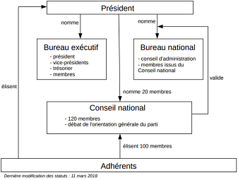

Vous venez de choisir le parti Politique : Le Rassemblement National !
Le Rassemblement national (RN), dénommé Front national (FN) jusqu'en 2018, est un parti politique français d'extrême droite fondé en 1972 à l'initiative d'Ordre nouveau. Il est présidé par Jean-Marie Le Pen de sa création à 2011, puis par sa fille Marine Le Pen. Les cofondateurs du parti se sont inspirés de l'organigramme du Parti communiste français pour organiser les instances du Rassemblement national.
née le 5 août 1968 à Neuilly-sur-Seine (Hauts-de-Seine), est une femme politique française. Engagée dès sa majorité au sein du Front national, elle occupe plusieurs mandats locaux à partir de 1998 (conseillère régionale d'Île-de-France, du Nord-Pas-de-Calais puis des Hauts-de-France, conseillère municipale d'Hénin-Beaumont) et siège de 2004 à 2017 au Parlement européen, où elle co-préside le groupe Europe des nations et des libertés (ENL) à partir de 2015. Elle est élue présidente du Front national lors de son congrès de 2011, succédant à son père, Jean-Marie Le Pen, qui dirigeait le parti depuis sa fondation. Lors des élections législatives de 2017, elle est élue députée dans la onzième circonscription du Pas-de-Calais. Marine Le Pen veut être candidate une troisième fois en 2022. Le 25 janvier, elle a lancé une plateforme collaborative sur son projet intitulée "M L'avenir".

L'un des éléments majeurs du programme du Rassemblement national est le concept de la « préférence nationale » (ou « priorité nationale »), qui peut se résumer dans l'idée que toute personne de nationalité française (indépendamment de son origine) doit avoir la priorité sur les logements, les aides sociales et les emplois (à compétences égales) par rapport aux étrangers. Inscription dans la constitution du texte suivant : « La République ne reconnaît aucune communauté » Création d'un ministère de l'Intérieur, de l'Immigration et de la Laïcité. Interdiction de « toutes pratiques racistes, sexistes et discriminatoires, en particulier dans les lieux publics ». Par exemple, le halal serait interdit dans les cantines scolaires tout comme les horaires séparés dans les piscines municipales. Interdiction d'attribuer des subventions publiques aux associations estimées communautaristes. Construction de 45 000 nouvelles places de prison. Abaissement de la majorité pénale de 18 à 15 ans. Reconstitution en cinq ans des effectifs de police et de gendarmerie supprimés depuis 2005. Sanctions renforcées contre les délinquants récidivistes. Suppression de prestation sociale (aides, logements, RSA, etc.) versée aux récidivistes délinquants ou criminels justiciables d'une peine d'un an de prison ou plus.